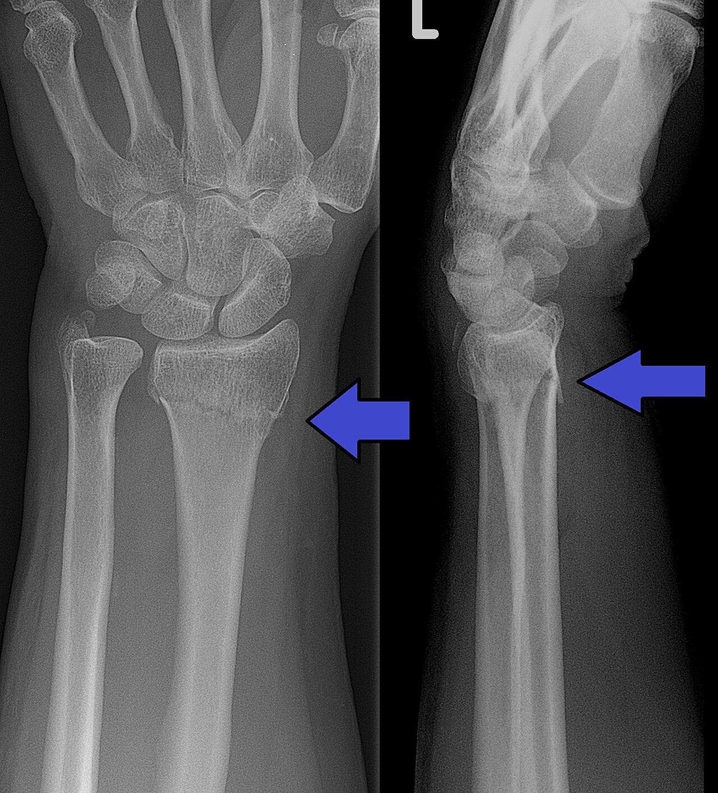

Ficha del catálogo
Fractura de Colles (radio distal)
- Sistema
- Óseo
- Modalidad
- RX
- Región
- Muñeca
- Dificultad
- Básico
Fractura del extremo distal del radio con desplazamiento dorsal del fragmento, típicamente por caída sobre la mano extendida. Es una de las fracturas más frecuentes del ser humano, sobre todo en mujeres posmenopáusicas con osteoporosis y en personas jóvenes por traumatismos de alta energía.
Técnica
Se estudia con proyecciones posteroanterior y lateral de muñeca. La lateral es la que mejor demuestra el desplazamiento dorsal característico.
Qué observar
- Trazo de fractura transversal en la metáfisis distal del radio, a unos 2-3 cm de la superficie articular
- Desplazamiento dorsal del fragmento distal: En la proyección lateral produce la clásica deformidad 'en dorso de tenedor'
- Acortamiento radial e impactación: Comparar la altura del radio con la del cúbito
- Fractura asociada de la estiloides cubital, presente en más de la mitad de los casos
- Extensión del trazo hacia la articulación radiocarpiana o radiocubital distal, dato que cambia el tratamiento
- Aumento de volumen de partes blandas alrededor de la muñeca
Hallazgos
Se identifica el trazo de fractura en el radio distal con angulación y desplazamiento del fragmento, junto con alteración de la alineación normal de la muñeca.
Perlas
Su imagen especular es la fractura de Smith, en la que el fragmento se desplaza hacia palmar (ocurre por caída sobre la muñeca flexionada). Distinguirlas depende por completo de la proyección lateral.
Diagnóstico diferencial
- Fractura de Smith
- En la proyección lateral el fragmento distal se desplaza y angula hacia palmar, invirtiendo la deformidad en dorso de tenedor propia de la de Colles.
- Fractura de Barton
- El trazo es articular y arranca un fragmento del reborde dorsal o palmar del radio que se luxa junto con el carpo, de modo que hay subluxación radiocarpiana además de la fractura.
- Fractura del estiloides radial
- El trazo es oblicuo y limitado al estiloides, sin afectar toda la metáfisis ni producir acortamiento radial global.
- Fractura fisaria distal del radio en el niño
- La solución de continuidad sigue la fisis, con o sin fragmento metafisario o epifisario asociado, y se clasifica por el patrón de Salter-Harris en lugar de describirse como metafisaria pura.
- Luxación perilunar y lesiones del carpo
- El radio distal está íntegro y lo que se pierde es la alineación de los arcos carpianos y la relación entre semilunar, hueso grande y radio en la proyección lateral.
- Fractura patológica sobre lesión ósea
- El trazo asienta sobre una zona de destrucción trabecular, adelgazamiento cortical o lesión lítica previa, con un mecanismo desproporcionadamente leve.
Simuladores
- Una radiografía con la muñeca mal posicionada puede simular acortamiento radial o desviación (se comprueba la técnica verificando la superposición correcta del cúbito y el radio en la lateral verdadera).
- Los canales nutricios y las líneas de crecimiento residuales del radio distal son finos, oblicuos, con bordes esclerosos y no producen escalón cortical.
- En pacientes con antecedente de fractura antigua, la deformidad consolidada puede confundirse con una lesión aguda: El trazo antiguo es esclerótico, remodelado y sin aumento de partes blandas.
- La superposición del estiloides cubital con el piramidal puede simular un fragmento libre (se aclara con la proyección lateral o con una desviación cubital).
Por modalidad
- RX
- Método de diagnóstico y seguimiento: Define el trazo, la angulación dorsal, la inclinación radial, la altura radial y la afectación articular, y sirve para controlar la reducción.
- TC
- Indicada cuando se sospecha extensión articular, conminución o escalón intraarticular; las reconstrucciones guían la planificación quirúrgica.
- RM
- Se reserva para fractura oculta con radiografía normal y dolor persistente, o para valorar el fibrocartílago triangular y los ligamentos escafolunares asociados.
Protocolo
Proyección posteroanterior con el codo en flexión de 90°, hombro a la altura de la muñeca y mano en pronación apoyada sobre el receptor, con rayo central perpendicular al carpo medio. La lateral se obtiene con el borde cubital apoyado, el pulgar hacia arriba y comprobando la superposición de radio y cúbito. Tras la reducción se repite el mismo par de proyecciones, idealmente con la misma técnica para poder comparar. Si se solicita tomografía se adquieren cortes finos con reconstrucciones en los tres planos y volumétricas.
Clasificación
Se emplean sistemas descriptivos y quirúrgicos. La clasificación AO organiza las fracturas del radio distal en extraarticulares, articulares parciales y articulares completas, con subgrupos según la conminución. También se usan clasificaciones que separan los patrones clásicos con nombre propio, como Colles, Smith y Barton, según el sentido del desplazamiento y la afectación del reborde articular. En la práctica el informe debe cuantificar además los parámetros radiológicos de reducción: Inclinación radial, altura radial y angulación palmar.
Errores frecuentes
- Informar solo la fractura del radio y no describir los parámetros de alineación, que son los que deciden si la reducción es aceptable.
- Pasar por alto la extensión intraarticular o la lesión de la articulación radiocubital distal, que cambian el tratamiento.
- No revisar el escafoides y el resto del carpo, ya que las lesiones asociadas son frecuentes en el mismo mecanismo.
- Confundir la de Colles con la de Smith por informar solo con la proyección frontal, cuando la dirección del desplazamiento únicamente se define en la lateral.

colles muñeca radio fractura caida osteoporosis urgencias